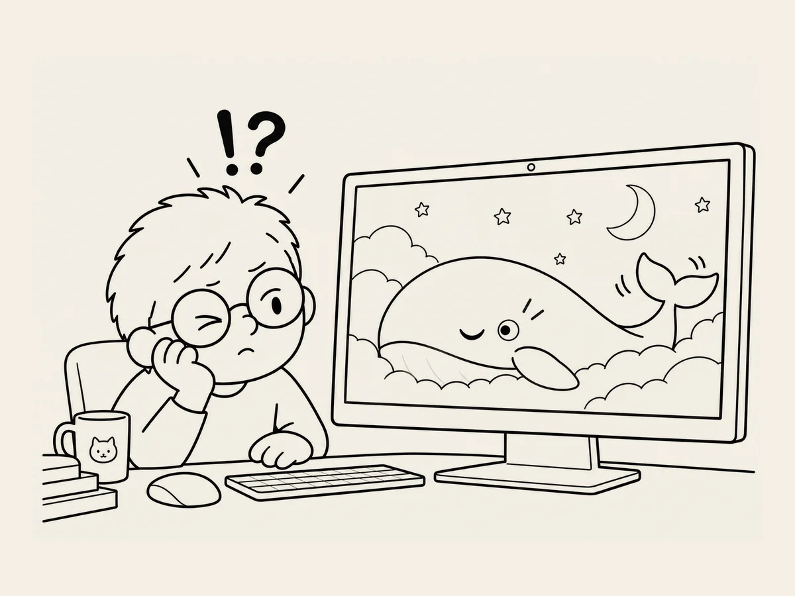

7.
고래 눈 옆에 또 다른 눈이 생겼다.
그림이 다 만들어졌다.
그런데 화면에 올려놓고 보니 조금 아쉽다.
너무 가만히 있다.
잠자는 화면이니 요란하게 움직일 필요는 없다.
하지만 아주 조금은 움직이면 좋겠다.
고래 꼬리가 살짝 움직이고,
눈을 천천히 감고,
구름이 아주 조금 흘러가고.
그 정도.
AI에게 물었다.
“이미지 한 장으로 이런 움직임을 만들 수 있어?”
가능하단다.
“그럼 고래 꼬리만 살짝 움직이게 해보자.”
해본다.
엉망이다.
고래 꼬리가 허공에서 휘젓는다.
“고래 눈이 스르륵 감기게 해보자.”
이번에는 정말 엉망이 나왔다.
감긴 눈 옆에 또 다른 눈이 생겼다.
내 눈을 찔끔 감았다.
